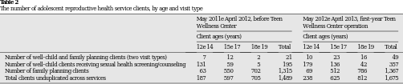

|

corpus-oa-validation/10.1016_j.jadohealth.2016.11.026/tables/table2/table.svg.png
|
|
12e14 |
15e17 |
18e19 |
Total |
12e14 |
15e17 |
18e19 |
Total |
| Number of well-child and family planning clients (two visit types) |
7 |
12 |
2 |
21 |
10 |
23 |
16 |
49 |
| Number of well-child clients receiving sexual health screening/counseling |
131 |
59 |
5 |
195 |
179 |
136 |
42 |
357 |
| Number of family planning clients |
63 |
550 |
702 |
1,315 |
69 |
512 |
786 |
1,367 |
| Total clients unduplicated across services |
187 |
597 |
705 |
1,489 |
238 |
625 |
812 |
1,675 |
corpus-oa-validation/10.1016_j.jadohealth.2016.11.026/tables/table2/table.svg.html
|

corpus-oa-validation/10.1016_j.jadohealth.2016.11.026/tables/table1/table.svg.png
|
| Community mobilization Stakeholder education Evidence-based programs Increase youth access to contraceptive and reproductive health services |
• Assess community support for ARHS access • Build community leaders’capacity to support ARHS access • Normalize support for ARHS access through presentations to community groups on community attitudes and project approaches • Implement supplemental lesson on ARHS access to youth enrolled in evidence-based programs • Assess youth attitudes about ARHS access • Open Teen Wellness Center • Expand ARHS referral network of community organizations |
| ARHS = adolescent reproductive health services. |
corpus-oa-validation/10.1016_j.jadohealth.2016.11.026/tables/table1/table.svg.html
|